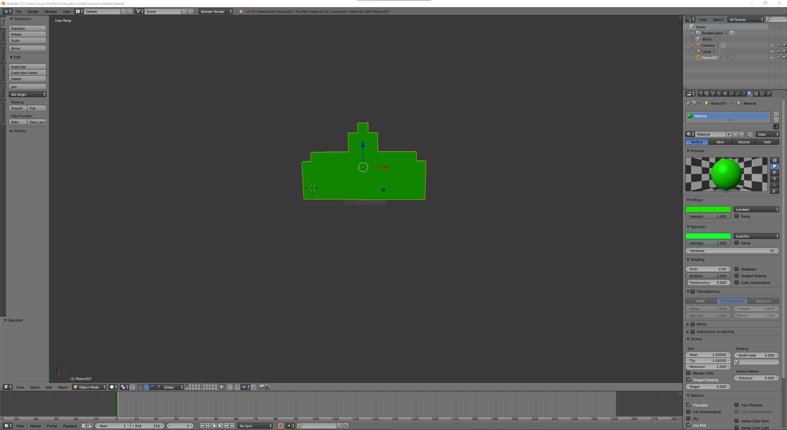

INTRODUCTION
Pour ce projet il a fallu faire le jeu Space Invaders sous forme de jeu tournant sur navigateur web en utilisant la bibliotheque Javascript Three.JS. Donc une sorte de remake du jeu vidéo en reprenant les bases de cette version et en ajoutant certaines features.
GRAPHISME
Pour le choix des modèles utilisés , j'ai simplement récupérer les modèles Blinder de ce lien. Je les ai ensuite exporter en JSON puis utilisé.
LES TYPES DE MECHANTS
- Les Méchants sont représentés par 3 types d'Aliens.Chaque aliens se diffère par une couleur (Jaune/Orange/Bleu).Il y a un nombre de points gagnés différent pour chaque mechants (jaune 10 points, orange 20 et bleu 40).
ESPACE
Le jeu se situe sur un simple plateau quadrillé flottant dans l’espace.
L’espace a été modélisé en utilisant une Skybox sphérique dont les normales sont tournées vers l'intérieur et en utilisant une image à haute résolution.
De plus, j'ai généré dynamiquement des particules représentant des étoiles à l’aide de ce site internet.
ARCHITECTURE
Organisation
- Le fichier index.js est le point d'entrée du programme. Il instancie un objet de type main et invoque sa méthode animate(), ce qui a pour but de lancer l’animation générale du jeu.
- Le fichier main.js est la classe principale contenant le moteur du programme. Tous les prototypes y sont instanciés.. Il contient entre autres les fonctions init() et animate() qui permettent d’instancier et d’animer le jeu.
- Le fichier modele.js permet de manière générale et dynamique, en récupérant en paramètre des données spécifiques telles que les hitbox, le chemin du fichier du modèle 3D, de pouvoir charger le modèle et de le paramétrer.
This et héritage
Toutes les classes sont reliées les unes aux autres par les heritages et chaine de prototypage (Object.Create).
La classe main.js par exemple, qui est la classe centrale, surcharge la classe parente qui est THREE.Scene. Cela signifie qu’un objet main hérite de toutes les propriétés de THREE.Scene et ainsi l'écriture this de l’objet main équivaut au this de THREE.Scene.
La classe modele
Cette classe est connectée à plusieurs autres classes. Elle a pour but d’instancier, charger le modèle de toutes les entités (joueur, mechants, boucliers et projectiles).
GESTION DES EVENEMENTS
Les Hitbox
Après avoir chargé un modèle, un cube blanc visible a été créé et ainsi par des translations/agrandissements, j'ai ajustés à la volée et visuellement le cube pour qu’il englobe parfaitement le modèle.
Les Collisions
Les collisions entre les projectiles et les différentes entités (joueur, mechants et boucliers) sont gérés par une unique méthode dans la classe Projectile. Les collisions sont gérées par un Raycaster de la manière suivante:
- Joueur et mechants détectent les collisions et cela induit la perte d'un point de vie par le joueur et la destruction du mechant (suppression visuelle de la scène). Concernant les boucliers, je n'ai pas réussi a implémenter la destruction partielle d’un bouclier .
Intelligence artificielle et dynamisme
Intelligence artificielle
Les mechants sont dotés d'une intelligence artificielle. Il existe une fonction dans la classe ligneMechant qui sélectionne le mechant le plus proche du joueur pour tirer. De plus, la cadence des tirs augmente proportionnellement et dynamiquement avec les niveaux.
Dynamisme
La classe horde représente l’ensemble des mechants.
Parmis cette horde, la classe ligneMechant représente les lignes de mechants. Cela permet de gérer indépendamment le dynamisme
de chaque ligne. La composition des lignes est variée et générée dynamiquement, ainsi que leur vitesse de déplacement.
AUDIO, CAMERAS
Audio
Il y a deux musiques , une dans l'écran d'accueil et l'autre durant le jeu(ces deux musique provienne du jeu vidéo Ratchet and Clank).
On notera qu'un son est émis pour le game over et pour certaine collisions (joueur et boucliers).
Interactions
- Touche H: a été implémentée et permet d’afficher une boîte de dialogue informant sur les touches pour tirer, déplacer le joueur.
- Touche F: a été implémentée et permet l’affichage en plein écran .
- Touche K: a été implémentée et permet d'éliminer tous les mechants(Triche).
- Touche S: a été implémentée et permet de faire un screenshot.
Les Caméras
Deux vues de caméras sont disponibles et on peut y accéder en pressant les touches suivantes:
- Touche 0: caméra par défaut
- Touche 1: caméra joueur en vue première personne
Une transition visuelle est effectuée lorsque l’on presse les différentes touches de caméra grâce à Tween.Js.
BIBLIOTHEQUES UTILISEES
Keydrown.js
Cette API permet de gérer les évènements claviers (events KeyUp et KeyDown).
Howler.js
Cette API est dédiée à la gestion de la musique et des sons audios.
Tween.js
L'unique API JavaScript permet de gérer les effets de Tweening.
Threex.js
Cette riche API, basée sur Three.js, est dédiée au jeu vidéo. Dans notre cas, nous avons simplement utilisé les fonctions THREEx.Fullscreen, THREEx.WindowResize et THREEx.screenshot permettant respectivement l’affichage en plein écran, d’adapter dynamiquement la taille de la fenêtre et la capture d’écran.